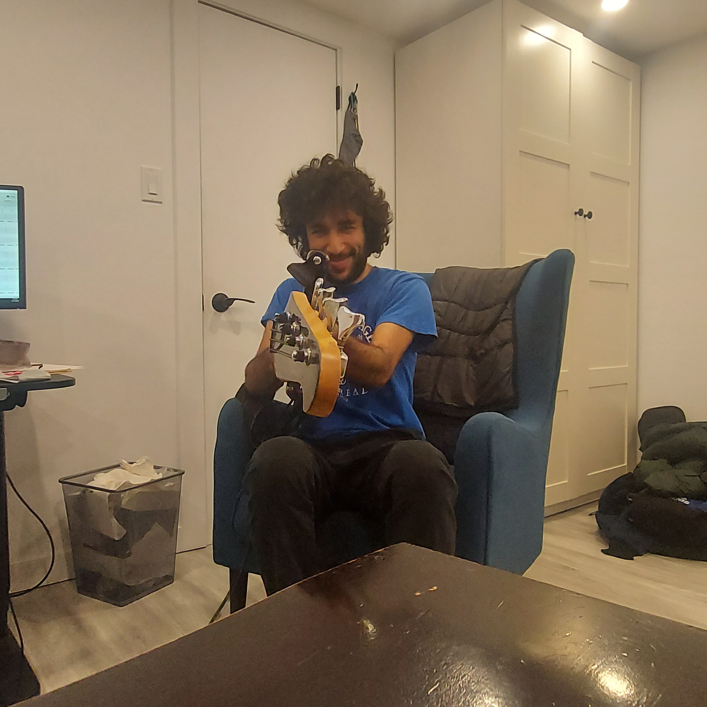

I want to preface this post by giving some background to my university situation. As of the post date, I am a first year software engineering student at the University of Waterloo. When school began on September 7th 2020, I was not sure what to expect. With the brand new online learning system being implemented, my first year was looking to be filled with surprises and anomalies. And boy were there surprises and anomalies. Since I am in the engineering faculty, I take a 6 course workload, unlike most other programs which would take 5 courses. The 6 courses in my first term are ECE 105 (physics), Math 117 (calculus), Math 115 (linear algebra), Math 135 (discrete math), CS 137 (Intro to Programming) and SE 101 (a program specific design course). Overall, the courseload has been pretty heavy. While most courses are relatively fair in workload, ECE 105 specifically has taken a big toll on me. The course has been, in my opinion, disastrous compared to the other courses. The material for the course has been decent but the assesments have been terrible. The website that holds the assesments (mobius) constantly has errors, and the questions on the assesments have been significantly harder than those I practice on. Students in the program have notified the professors about the issues that pop up, so I will have to see how the course changes as time goes on. There have been signs of improvement so I am still hopeful. As of now, ECE 105 is by far my lowest mark but that doesn't mean my other courses have been easy or that I have been slacking on physics more than other courses. Math 135 has quickly been ramping up in difficulty since highschool does not teach you how to prove statements mathematically or the mathematical language in doing so. Math 115 has also been difficult since linear algebra is another portion of math not taught in secondary education. Math 117 and CS 137 have been relatively easy compared to the rest of the courses since programming and calculus were both focal points in my highschool education. SE 101 has mainly been a course to meet others, and not so much as an academic priority. I have been creating a budget braille printer as part of the design project in the course alongside an amazing team and so far everything has been smooth sailing. As of now, I have a 90+ average in my courses not including ECE 105, although I have 2 midterms next week so things may change.
Because of my school workload, I have not been able to pursue many hobbies. However there are a few that I have been able to practice and enjoy. One of which has been picking up the electric guitar and playing with my friends on a weekly/bi-weekly basis. As you can see in the first picture of the post, my friends and I have been practicing and playing together in my friend Jordan's (hairy guy looking at the camera) newly rennovated room, which also happens to have studio like qualities (which is pretty amazing). Hanging out with my friends and playing in our own band setting has been a huge stress reliever for me, and has quickly risen to become one of my favourite past times. Over the reading week, I have frequently visited some of my favourite people to talk, take a break from school and play guitar and it's been inspiring every time.
Other than playing guitar, I have still kept up with some of my old hobbies. Before university started I hit diamond 4 in league of legends, but since then I have not been able to muster enough time and reasoning to play league other than for a few small games with my friends. I have been watching worlds 2020, and once again I am disappointed to see North America take a group stage exit. I'm pretty sure Damwon Gaming is going to take an easy championship but I've been wrong before. As an avid anime watcher, I have been keeping up with the current anime season and I have not been let down. Haikyuu to the Top season 2 has been great so far, I'm really vibing with Hinata's growth as a character and volleyball player. Irregular at Magic High has been very good as well, the plot keeps expanding on a world that has realistic modern day problems for a society engrained in the use of magical technology. Danmachi has been my guilty pleasure this season, if you watch it then you know what I mean. It's a bummer that Toronto has gone back to stage 2 because of the rising covid cases. I was planning on going to the gym at least 3-4 times a week but now that they've closed all I can rely on is doing some pushups, jogging/walking and using the free weights I have at home. But I can tell that my motivation is waning with every single week.
Outside of my entertainment hobbies, I was able to finish up the groundwork of my website during reading week. At the moment I'm planning on keeping it simple and leaving it as a blog website. As time goes by, I will start linking projects that I have completed to the website, along with better contacts and about me pages when I get better pictures of myself! I currently do not have many ideas as to what I will do for programming projects but I have a few interests. Other than the braille printer I'm currently working on for SE 101, my friend Lukas has gotten me interested in making a discord bot. I also wanted to make some sort of webscraper but I haven't decided what web application to scrape after learning that amazon removed their web scraping potential. Hopefully I will muster enough intiative to participate in a hackathon before first term ends.
All in all, university hasn't been too bad. I have a few goals to keep in mind, such as not failing physics, but otherwise online learning has actually been pretty comfortable. I haven't been lonely since I talk to my friends every day, although I have lost the opportunity to meet my program peers in person. Being at home means I get to spend every day with my family, which by itself relieves tons of stress. So far my approach to university has been working well, as long as I continue to work hard in school and have fun with my hobbies/friends the future is looking great.